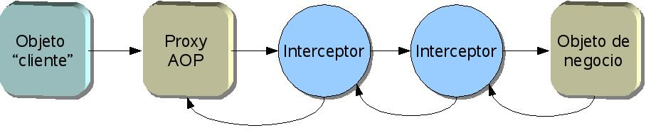

Programación orientada a aspectos (AOP) en Spring
Introducción a la AOP
La programación orientada a aspectos (AOP - Aspect Oriented Programming) es un paradigma de programación que intenta formalizar y representar de forma concisa los elementos que son transversales a todo el sistema. En los lenguajes orientados a objetos, la estructura del sistema se basa en la idea de clases y jerarquías de clases. La herencia permite modularizar el sistema, eliminando la necesidad de duplicar código. No obstante, siempre hay aspectos que son transversales a esta estructura: el ejemplo más clásico es el de control de permisos de ejecución de ciertos métodos en una clase:
public class MiObjetoDeNegocio {
public void metodoDeNegocio1() throws SinPermisoException {
chequeaPermisos();
//resto del código
...
}
public void metodoDeNegocio2() throws SinPermisoException {
chequeaPermisos();
//resto del código
...
}
protected void chequeaPermisos() throws SinPermisoException {
//chequear permisos de ejecucion
...
}
}
Como vemos, estructurando adecuadamente el programa se puede minimizar la repetición de código, pero es prácticamente imposible eliminarla. La situación se agravaría si además tuviéramos que controlar permisos en objetos de varias clases. El problema es que en un lenguaje orientado a objetos los aspectos transversales a la jerarquía de clases no son modularizables ni se pueden formular de manera concisa con las construcciones del lenguaje. La programación orientada a aspectos intenta formular conceptos y diseñar construcciones del lenguaje que permitan modelar estos aspectos transversales sin duplicación de código. En nuestro ejemplo, se necesitaría poder especificar de alguna manera concisa que antes de ejecutar ciertos métodos hay que llamar a cierto código.
En AOP, a los elementos que son transversales a la estructura del sistema y se pueden modularizar gracias a las construcciones que aporta el paradigma se les denomina aspectos (aspects). En el ejemplo anterior el control de permisos de ejecución, modularizado mediante AOP, sería un aspecto.
Un consejo (advice) es una acción que hay que ejecutar en determinado/s punto/s de un código, para conseguir implementar un aspecto. En nuestro ejemplo, la acción a ejecutar sería la llamada a chequeaPermisos(). El conjunto de puntos del código donde se debe ejecutar un advice se conoce como punto de corte o pointcut. En nuestro caso serían los métodos metodoDeNegocio1() y metodoDeNegocio2(). Nótese que aunque se hable de "punto de corte" en singular, en general no es un único punto del código.
En muchos frameworks de AOP (Spring incluido), el objeto que debe ejecutar esta acción se modela en la mayoría de casos como un interceptor: un objeto que recibe una llamada a un método propio antes de que se ejecute ese punto del código. Los interceptores se pueden encadenar, si deseamos realizar varias acciones en el mismo punto, como puede observarse en la siguiente figura.

Cuando algún objeto llama a un método que forma parte del pointcut, el framework de AOP se las "arregla" para que en realidad se llame a un objeto proxy o intermediario, que tiene un método con el mismo nombre y signatura pero cuya ejecución lo que hace en realidad es redirigir la llamada por una cadena de interceptores hasta el método que se quería ejecutar.
En algunas ocasiones nos interesará usar un interceptor para interceptar las llamadas a todos los métodos de una clase. En otras solo nos interesará interceptar algunos métodos. En Spring, cuando deseamos interceptar las llamadas solo a algunos métodos debemos definir un advisor, que será una combinación de pointcut (dónde hay que aplicar AOP) más interceptor (qué hay que ejecutar).
Aunque la terminología descrita en los párrafos anteriores será nueva para los no iniciados en AOP, las ideas resultarán bastante familiares a los que hayan trabajado con EJBs. En efecto, éstos funcionan de un modo muy parecido: el contenedor debe interceptar las llamadas a los métodos de negocio para poder ofrecer los servicios de seguridad, transaccionalidad y gestión de hilos. Los puntos de corte se especifican mediante los descriptores de despliegue y el EJBObject actúa de proxy. La diferencia básica es que AOP es más genérico que los EJBs, o dicho de otro modo, se podría considerar que el mecanismo de provisión de servicios de los EJBs es un subconjunto de AOP, ya que en EJBs:
- Los únicos objetos a los que se puede proporcionar servicios son por supuesto EJBs, pero no clases Java cualquiera (POJOs)
- Los puntos de corte que se puede especificar están limitados
- la implementación de los interceptores ya está hecha y no es posible cambiarla
AOP en Spring 2.0
Una de las áreas en las que más ha cambiado Spring 2.0 desde la versión 1.2 es en AOP, no tanto en la implementación interna, que sigue siendo similar, como en la forma de uso. La configuración necesaria se ha simplificado muy considerablemente. Además en lugar de usar una sintaxis propia de Spring se ha pasado a usar la de AspectJ. Siguiendo la filosofía de no reinventar la rueda, los desarrolladores de Spring han considerado que no era necesaria una sintaxis propia existiendo la de AspectJ, mucho más potente que la de Spring 1.2 y ampliamente probada en la práctica.
Hay que tener presente que no es lo mismo usar la sintaxis de AspectJ que usar AspectJ en sí. De hecho, lo recomendado en la documentación de Spring es usar la sintaxis de AspectJ pero con la implementación de AOP propia de Spring. Para casos en los que se necesite la potencia que puede dar AspectJ al completo, puede usarse su implementación sustituyendo a la de Spring, aunque cómo hacer esto último queda fuera del alcance de estas páginas.
Los apartados siguientes hacen un uso extensivo de la sintaxis de AspectJ, por lo que se recomienda al lector interesado que consulte su documentación, teniendo siempre en cuenta que Spring no soporta AspectJ al completo, sino solo un subconjunto.
Anotaciones vs. XML
Hay dos sintaxis alternativas para usar AOP en Spring 2.0. Una es mediante el uso de anotaciones en el propio código Java. La otra es con etiquetas en un fichero de configuración. El uso de XML es necesario cuando no podemos usar Java 5 (no tenemos anotaciones), no queremos tocar el código fuente o vamos a reutilizar la misma AOP en distintas aplicaciones y contextos. Sin embargo, usando anotaciones podemos encapsular el AOP junto con el código Java en un único lugar. En teoría este es el sitio en que debería estar si el AOP es un requisito de negocio que debe cumplir la clase.
En los ejemplos que siguen usaremos anotaciones. El lector puede consultar la excelente documentación de Spring para ver los equivalentes XML.
Añadir soporte para AOP a un proyecto
Para añadir soporte AOP a un proyecto Spring necesitaremos dos librerías: aspectjweaver.jar, y aspectjrt.jar, que podemos obtener de la distribución estándar de AspectJ o bien de la versión de Spring que viene con todas las dependencias incluidas. Además, si queremos usar AOP con clases que no implementen ningún interface, necesitaremos la librería CGLIB. En teoría es una buena práctica que todas nuestras clases de negocio implementen un interfaz, con lo que este último caso no debería darse demasiado.
Además debemos especificar que vamos a hacer uso de AOP en el XML de configuración de beans. La configuración se reduce a una sola etiqueta. En negrita se destaca la etiqueta y la definición del espacio de nombres necesaria para poder usarla.
<?xml version="1.0" encoding="UTF-8"?>
<beans xmlns="http://www.springframework.org/schema/beans"
xmlns:xsi="http://www.w3.org/2001/XMLSchema-instance"
xmlns:aop="http://www.springframework.org/schema/aop"
xsi:schemaLocation="http://www.springframework.org/schema/beans
http://www.springframework.org/schema/beans/spring-beans-2.0.xsd
http://www.springframework.org/schema/aop
http://www.springframework.org/schema/aop/spring-aop-2.0.xsd"
<aop:aspectj-autoproxy/>
<!-- definiciones de beans -->
<bean id=".." class="..">
</bean>
..
<beans>
Puntos de corte (pointcuts)
Como ya se ha dicho, un punto de corte o pointcut es un punto de interés en el código antes, después o "alrededor" del cual queremos ejecutar algo (un advice). Un pointcut no puede ser cualquier línea arbitraria de código. La versión actual de Spring solo soporta puntos de corte en ejecuciones de métodos de beans. La implementación completa de AspectJ permite usar también el acceso a campos, la llamada a un constructor, etc, aunque esto en AOP de Spring no es posible.
Es importante destacar que al definir un pointcut realmente no estamos todavía diciendo que vayamos a ejecutar nada, simplemente marcamos un "punto de interés". La combinación de pointcut + advice es la que realmente hace algo útil. Por ello, los ejemplos dados en este apartado por sí solos no tienen demasiado sentido, no hay que intentar probarlos tal cual, aunque aquí los explicaremos aislados para poder describir con cierto detalle su sintaxis antes de pasar a la de los advices.
Lo que sigue es un conjunto de ejemplos que ilustran las opciones más comunes para pointcuts, no una referencia exhaustiva, que no tendría sentido estando ya la documentación de Spring y la de AspectJ para ello.
Expresiones más comunes
La expresión más usada en pointcuts de Spring es execution(), que representa la llamada a un método que encaje con una determinada signatura. Se puede especificar la signatura completa del método incluyendo tipo de acceso (public, protected,...), tipo de retorno, nombre de clase (incluyendo paquetes), nombre de método y argumentos. Teniendo en cuenta:
- El tipo de acceso y el nombre de clase son opcionales, pero no así el resto de elementos
- Podemos usar el comodín * para sustituir a cualquiera de ellos, y también el comodín .., que sustituye a varios tokens, por ejemplo varios argumentos de un método, o varios subpaquetes con el mismo prefijo.
- En los parámetros, () indica un método sin parámetros, (..) indica cualquier número de parámetros de cualquier tipo, y podemos también especificar los tipos, por ejemplo (String, *, int) indicaría un método cuyo primer parámetro es String, el tercero int y el segundo puede ser cualquiera.
Por ejemplo, para especificar todos los métodos con acceso "public" de cualquier clase dentro del paquete es.ua.jtech.aop pondríamos:
execution( public * es.ua.jtech.aop.*.*(..))
Donde el primer * representa cualquier tipo de retorno, el segundo * cualquier clase y el tercer * cualquier método. Los .. representan cualquier conjunto de parámetros
Algunos ejemplos más de execution()
//Ejecución de cualquier getter (método público cuyo nombre comience por "get" y que no tenga parámetros). execution(public * get*()) //Ejecución de cualquier método public de cualquier clase en el paquete es.ua.jtech o subpaquetes (fíjate en el "..") execution(public * es.ua.jtech..*.*(..)) //Ejecución de cualquier método de cualquier clase en el paquete es.ua.jtech que devuelva void y cuyo primer parámetro sea String //Se omite el tipo de acceso execution (void es.ua.jtech.*.*(String,..))
within() permite especificar todos las llamadas a métodos dentro de un paquete o subpaquetes del mismo (usando el comodín .. al igual que en la sintaxis de execution()).
//Cualquier llamada a método dentro del paquete es.ua.jtech o subpaquetes de este within(es.ua.jtech..*)
args() permite especificar el tipo deseado para los argumentos. No se suele usar tal cual, sino combinado con execution como un "truco" para darle nombre a los argumentos (ver el apartado siguiente).
//Cualquier método que tenga un solo parámetro que implemente Serializable args(java.io.Serializable)
Combinar pointcuts
Se pueden combinar pointcuts usando los operadores lógicos &&, || y !, con el mismo significado que en el lenguaje C. Por ejemplo:
//todos los getters o setters de cualquier clase execution (public * get*()) || execution (public void set*(*))
El operador && se suele usar en conjunción con args como una forma de "dar nombre" a los parámetros, por ejemplo:
execution (public void set*(*)) && args(nuevoValor)
Encajaría con un setter cualquiera, dándole el nombre nuevoValor al parámetro pasado al mismo. Veremos la utilidad de esto, cuando definamos advices, como método para acceder al valor del parámetro.
Pointcuts con nombre
Se le puede asignar un nombre arbitrario a un pointcut (lo que se denomina una signatura). Esto permite referenciarlo y reutilizarlo de manera más corta y sencilla que si tuviéramos que poner la expresión completa que lo define. La definición completa consta de la anotación @Pointcut seguida de la expresión que lo define y la signatura. Para definir la signatura se usa la misma sintaxis que para definir la de un método Java en un interfaz. Eso sí, el valor de retorno debe ser void. Por ejemplo:
@Pointcut("execution(public * get*())")
public void unGetterCualquiera() {}
Esta signatura se puede usar por ejemplo al combinar pointcuts:
@Pointcut("execution(public * get*())")
public void unGetterCualquiera() {}
@Pointcut("within(es.ua.jtech.ejemplo.negocio.*"))
public void enNegocio() {}
@Pointcut("unGetterCualquiera() && enNegocio()")
public void getterDeNegocio() {}
Advices
Con los advices ya tenemos la pieza del puzzle que nos faltaba para que todo cobre sentido. Un advice es algo que hay que hacer en un cierto punto de corte, ya sea antes, después, o "alrededor" (antes y después) del punto.
Los advices se especifican con una anotación con el pointcut y la definición del método Java a ejecutar (signatura y código del mismo). Como en Spring los puntos de corte deben ser ejecuciones de métodos los casos posibles son:
- Antes de la ejecución de un método (anotación @Before)
- Después de la ejecución normal, es decir, si no se genera una excepción (anotación @AfterReturning)
- Después de la ejecución con excepción/es (anotación @AfterThrowing)
- Después de la ejecución, se hayan producido o no excepciones (anotación @After)
- Antes y después de la ejecución (anotación @Around)
Un aspecto (aspect) es un conjunto de advices. Siguiendo la sintaxis de AspectJ, los aspectos se representan como clases Java, marcadas con la anotación @Aspect.
import org.aspectj.lang.annotation.Aspect;
@Aspect
public class EjemploDeAspecto {
//aquí vendrían los advices...
}
@Before
Esta anotación ejecuta un advice antes de la ejecución del punto de corte especificado. Por ejemplo:
import org.aspectj.lang.annotation.Aspect;
import org.aspectj.lang.annotation.Before;
@Aspect
public class EjemploBefore {
@Before("execution(public * get*())")
public void controlaPermisos() {
// ...
}
}
Ejecutaría controlaPermisos() antes de llamar a cualquier getter.
@AfterReturning
Esta anotación ejecuta un advice después de la ejecución del punto de corte especificado, siempre que el método del punto de corte retorne de forma normal (sin generar excepciones). Por ejemplo:
import org.aspectj.lang.annotation.Aspect;
import org.aspectj.lang.annotation.AfterReturning;
@Aspect
public class EjemploAfterReturning {
@AfterReturning("execution(public * get*())")
public void log() {
// ...
}
}
Evidentemente para hacer log nos puede interesar saber el valor retornado por el método del punto de corte. Este valor es accesible con la sintaxis alternativa:
import org.aspectj.lang.annotation.Aspect;
import org.aspectj.lang.annotation.AfterReturning;
@Aspect
public class EjemploAfterReturning {
@AfterReturning(
pointcut="execution(public * get*())",
returning="valor")
public void log(Object valor) {
// ...
}
}
Al poner Object como tipo de la variable asociada al valor de retorno, estamos indicando que nos da igual el tipo que sea (incluso si es primitivo). Especificando un tipo distinto, podemos reducir el ámbito del advice para que solo se aplique a los puntos de corte que devuelvan un valor del tipo deseado.
@AfterThrowing
Esta anotación ejecuta un advice después de la ejecución del punto de corte especificado, si el método del punto de corte genera una excepción. Podemos tanto acceder a la excepción generada como restringir el tipo de las excepciones que nos interesan, usando una sintaxis como la siguiente:
import org.aspectj.lang.annotation.Aspect;
import org.aspectj.lang.annotation.AfterThrowing;
@Aspect
public class EjemploAfterThrowing {
@AfterThrowing(
pointcut="execution(public * get*())",
throwing="daoe")
public void logException(DAOException daoe) {
// ...
}
}
El ejemplo anterior indicaría que no hay que ejecutar el advice a menos que la excepción generada sea del tipo DAOException, y nos permite acceder a su valor a través del parámetro daoe.
@After
Esta anotación ejecuta un advice después de la ejecución del punto de corte especificado, genere o no una excepción, es decir, al estilo del finally de Java. Se usa típicamente para liberar recursos y otras tareas habituales para finally.
@Around
Esta anotación ejecuta parte del advice antes y parte después de la ejecución del punto de corte especificado. La filosofía consiste en que el usuario es el que debe especificar en el código del advice en qué momento se debe llamar al punto de corte. Por ello, el advice debe tener como mínimo un parámetro de la clase ProceedingJoinPoint, que representa el punto de corte. Llamando al método proceed() de esta clase, ejecutamos el punto de corte. Por ejemplo:
import org.aspectj.lang.annotation.Aspect;
import org.aspectj.lang.annotation.Around;
import org.aspectj.lang.ProceedingJoinPoint;
@Aspect
public class EjemploAround {
@Around("execution(public * get*())")
public Object profile(ProceedingJoinPoint pjp) throws Throwable {
long inst1 = System.currentTimeMillis();
Object valorRetorno = pjp.proceed();
long inst2 = System.currentTimeMillis();
System.out.println(inst2-inst1);
return valorRetorno;
}
}
El ejemplo contaría de manera muy básica el tiempo que tarda en ejecutarse el punto de corte.Hay que destacar varios puntos del código anterior. Como ya se ha dicho, cuando queremos llamar al punto de corte invocamos a proceed(). Además debemos devolver como valor de retorno del advice el devuelto por el punto de corte. Finalmente, si el método del punto de corte requiere parámetros, podemos pasarle un Object[].
Acceder a los parámetros y otra información del punto de corte
Spring ofrece al advice acceso tanto a los parámetros del método del punto de corte como a información adicional sobre el mismo. Ya hemos visto cómo acceder al valor de retorno, en el ejemplo de @AfterReturning, y a la excepción lanzada en el caso del @AfterThrowing.
Para hacer accesibles al advice los argumentos del punto de corte se puede usar args. Por ejemplo:
//...
@AfterReturning("execution(public void set*(*)) && args(nuevoValor)")
public void log(int nuevoValor) {
// ...
}
//...
Con esto enlazamos el valor del argumento del punto de corte con la variable nuevoValor, y además al poner int como tipo de nuevoValor indicamos que solo queremos aplicar el advice si el argumento del punto de corte es int.
Otra forma de hacer lo anterior sería usar un punto de corte "con nombre":
//..
@Pointcut("execution(public void set*(*))&& args(nuevoValor)")
public void unSetter(int nuevoValor) {}
@AfterReturning("unSetter(nuevoValor)")
public void log(int nuevoValor) {
//...
}
//..
Más de un advice para el mismo punto de corte
Aunque no se ha dicho explícitamente hasta el momento, por supuesto se puede definir más de un advice que encaje con el mismo punto de corte. La pregunta surge entonces de forma natural: ¿cuál es el orden de aplicación de los advices?.
Para los advices especificados dentro del mismo aspecto, se puede tomar como una regla básica que el orden de ejecución es el mismo que el de declaración. Es decir, que si declaramos varios advices de tipo before, se ejecutará primero el que primero aparezca declarado, y si declaramos varios de tipo after ocurrirá lo mismo (en realidad en el caso after si se piensa un poco se verá que el de mayor importancia es el que se ejecuta el último).
El caso en que tenemos advices definidos en aspectos distintos es más complejo, ya que en principio no está definida la precedencia por defecto y para especificarla hay que escribir algo de código Java. En concreto el aspecto debe implementar el interface org.springframework.core.Ordered. Remitimos al lector a la documentación de Spring para más información.